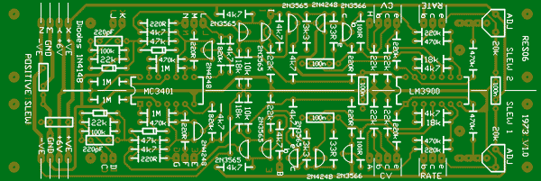
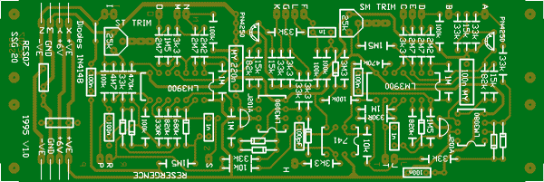
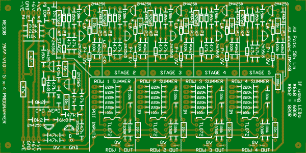
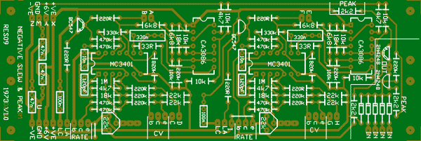
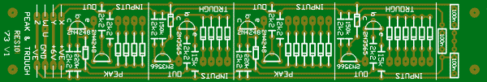

RES06
Dual Positive Slew from 1973. Some shuffling of op-amps has occurred to improve layout.
2 units width

RES07
SSG20 from 1995 - 1999. Errors around Coupler corrected.
2 units width

RES08 (tested)
5 stage Programmer from 1977. Based on the 4 stage programmer as presented in Synapse. This can also be used as a 4 stage programmer. I have added a second common pulse out that responds to ALL events, as well as the usual common pulse out that only responds to button pushes. There is onboard provision for the summing of 4 rows of pots. LEDs can be substituted for some of the 1N4148 diodes, giving a visual display of which section is selected.
3 units width

RES09
Negative Slew from 1973. There was a little space left on this board, so a PEAK was included, as this is often used to mix gate signals. LED drivers have been included to display the output level.
2 units width

RES10
Peak and Trough from 1973. Two of each have been included on this board, and one of each has additional inputs. It seemed a pity to waste so much PCB on a single version.
1 unit width
